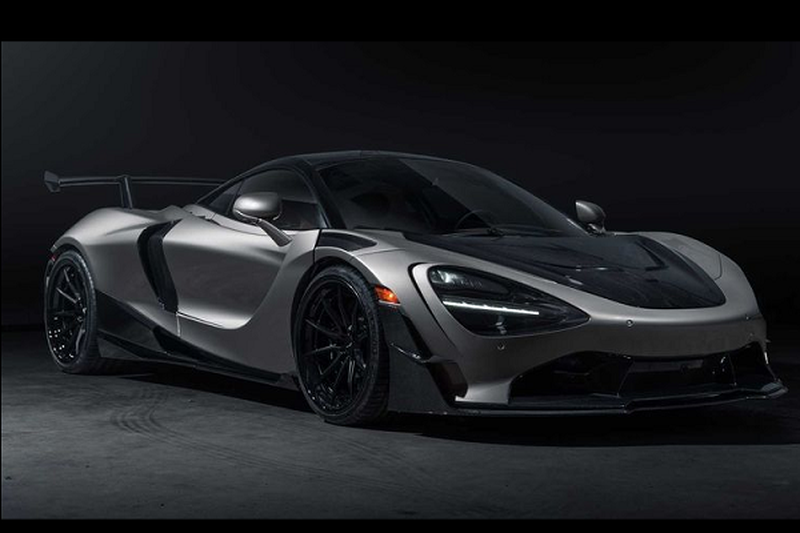
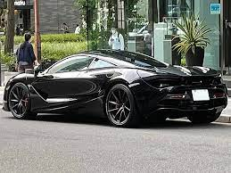

About Mac Laren 770LT
The McLaren 720S is a sports car designed and manufactured by British automobile manufacturer McLaren Automotive. It is the second all-new car in the McLaren Super Series, replacing the 650S beginning in May 2017. The 720S was launched at the Geneva Motor Show on 7 March 2017 and is built on a modified carbon monocoque, which is lighter and stiffer than the previous model, the 650S.
"TOP SPEED 288m/H
MAX RANGE 600 MILES
PRICE 3cr INR "  